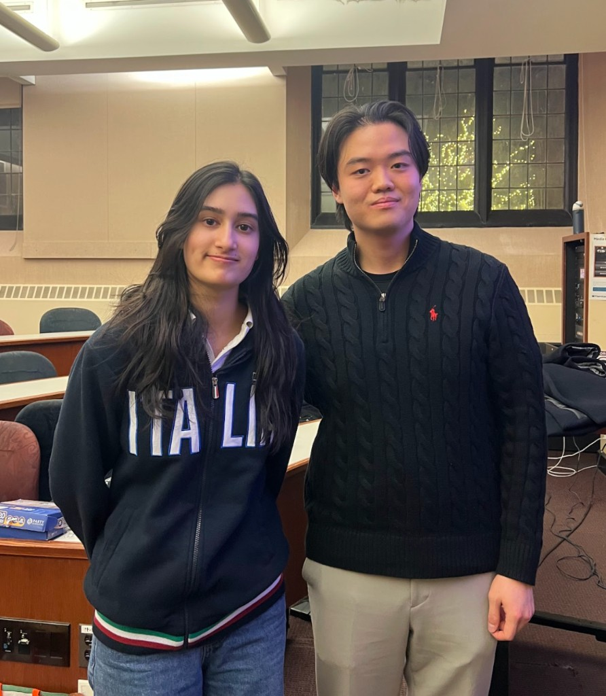
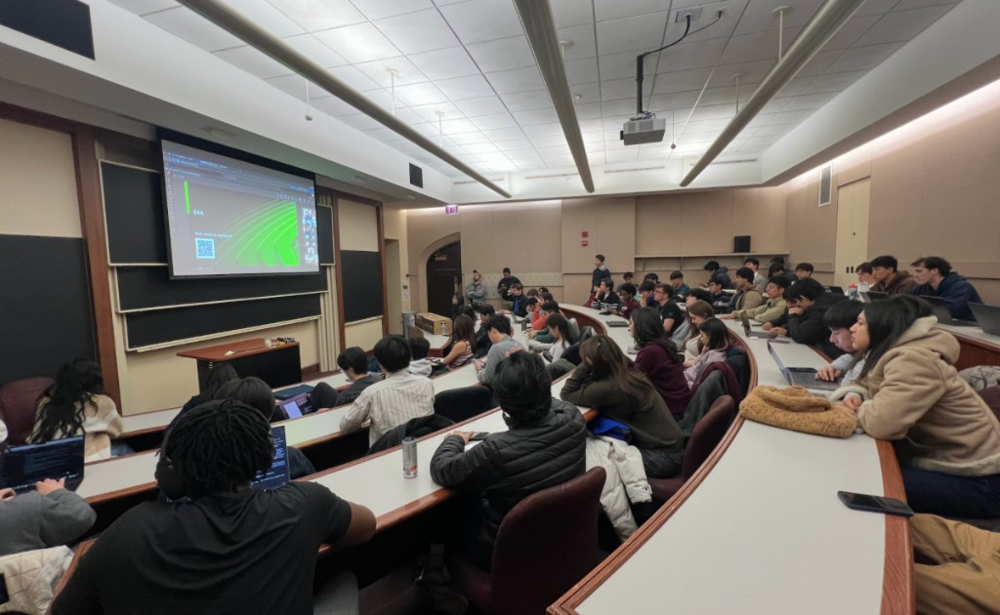

Winter & Spring 2026
A first-place hackathon, a product we actually shipped, and a season of putting events together for the UChicago tech community.
Vibe Coding Hackathon
In winter quarter I got to compete in — and win first place at — UChicago’s first Vibe Coding Hackathon with Eric Wong and Clarisse Cheung.
Last year the three of us had already been a team in CS 142, integrating a Set game. It was great to see those same habits of teamwork, integration, and collaboration show up again, this time in a real product.
The format was unusual in a good way. It mixed a startup pitch competition with a traditional hackathon, so we were allowed to think through the problem, what we wanted to build, and why, before the actual hacking window. That saved a lot of brainstorming time once the clock started.
We built Spot, an all-in-one fitness tracker and assistant: MediaPipe to track reps, real-time voice for feedback, and custom workout routines tied to someone’s individual goals.
The biggest lesson was keeping users in the loop. A Google Form we sent to students made it much clearer which features to prioritize — and that it was worth not giving up when things got messy. When our recorded demos did not have live-share permissions, we leaned entirely on a live demo to show the product. That ended up being the pitch.
KTP — Professional Development
This spring, as Co-Director of Professional Development for KTP alongside Eugenia, I helped organize several events for the UChicago tech community:
- Tips & Tricks for Recruiting — partnered with Career Advancement to share practical recruiting resources with students
- Chicago Industry Panel — brought together local tech professionals to talk careers and recruiting
- NVIDIA Keynote — hosted Samir Halepete (VP of VLSI at NVIDIA) and NVIDIA recruiters on chip design and AI
- Perspectives Fireside Chat — a conversation with Kyle Jung on building founding teams, navigating startups, and career advice

We also worked with UChicago Career Advancement to support these events (and boost attendance) with everything from Insomnia Cookies to Chipotle catering.

A few things I learned along the way:
- Listen to your audience. Strong attendance comes from matching speakers and incentives to what people actually want.
- Event execution matters. Promotion (Partiful, outreach) is just as important as logistics — yes, including utensils.
- Collaboration is key. Working closely with marketing, and leaning on others when things get busy, makes everything run smoother.
Huge thank you to Eugenia, Quincy, Elena, Joey, Natalia Elezocic, Kameron Kanbaz, Wasfa Fatima, Alec Bargher, Richard Huang, Reid Newborn, Kahveh Kheymehdooz, Lauren Salustro, and many others who made this possible.